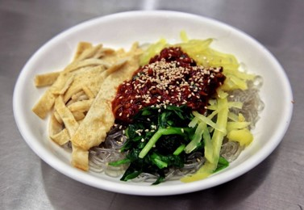
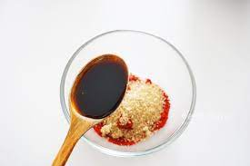
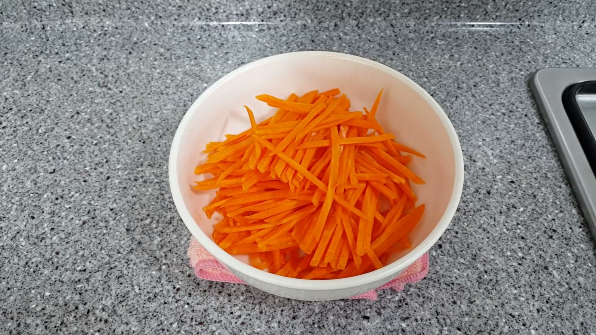
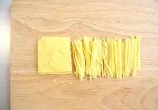
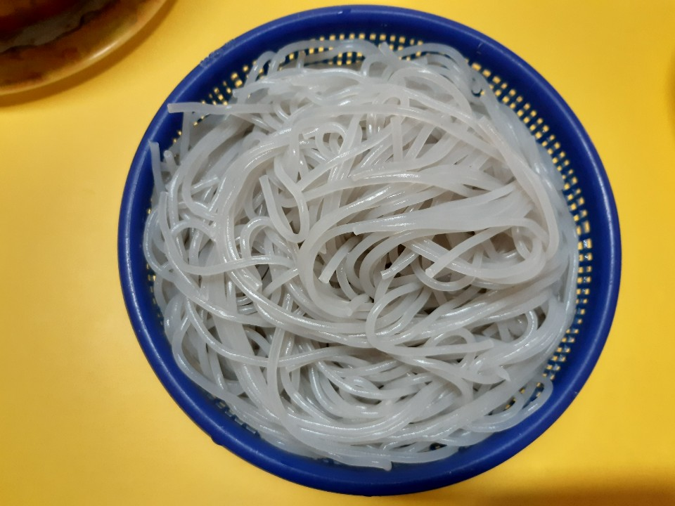

부산 명물 ★비빔당면★ 레시피
부산의 명물! 부산 시장의 비빔당면을 집에서 즐겨보세요~
[기본재료]
[양념장 재료]
- 설탕
- 고춧가루
- 깨
- 다진마늘
- 간장
- 올리고당
- 참기름
- 식초
- 다진파
1.

고춧가루2큰술, 설탕1큰술, 깨1큰술, 간장4큰술, 식초1.5큰술, 올리고당2큰술, 다진마늘 0.5큰술,
참기름2큰술, 다진파2큰술을 넣고 양념장을 만들어주세요. ▶양념장을 먼저 만들는 이유는 양념장을 먼저
만들어야 당면이 불어버리는 사태를 막을 수 있기 때문이에요.
2.

깻잎과 당근을 깨끗이 씻어서 채썰어주세요.
3.

계란1개를 잘 풀어서 후라이팬에 기름을 두르고 계란물을 부어서 계란지단을 만들어줍니다
다 익은 계란지단은 길게 채썰어주세요
4.

당면을 삶아줍니다. ▶ 보통 7~8분정도 삶아주시는게 제일 적당해요.
다 삶아진 당면은 찬물로 헹궈주세요.
5.
그릇에 당면을 담고, 당근,계란,깻잎 고명을 얹어주고 만들어둔 양념장을 넣어주면 부산 비빔당면 완성!
팁: 다른 고명들은 얹어주어도 좋아요. (초록색고명:오이,시금치,부추 등 / 노란색고명 : 단무지,오뎅 등 )